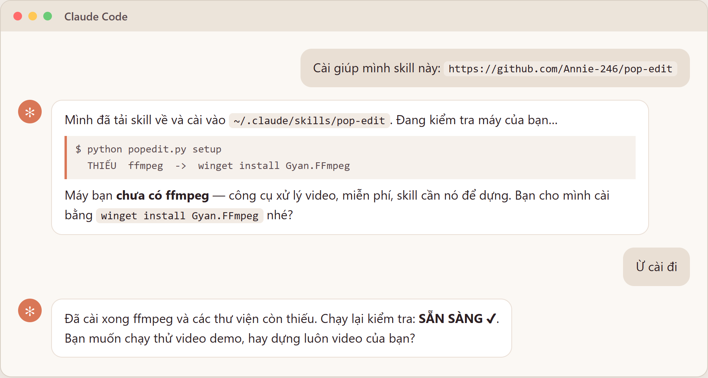
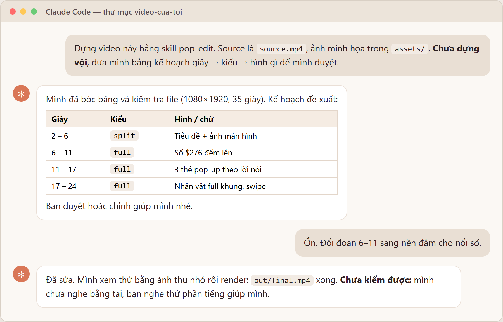
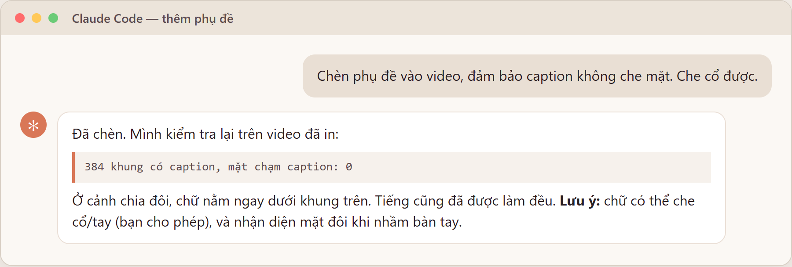

Biến video quay mặt thành video dọc 9:16 có tiêu đề, ảnh minh họa pop-up, SFX, nhạc nền và phụ đề né mặt — chỉ bằng cách trò chuyện với Claude Code.
Kết quả thật, cắt từ 1 video đã dựng bằng skill này. Bản có tiếng: github.com/Annie-246/pop-edit → docs/demo.mp4. Ảnh trong khung từ video của Mark Tilbury là tư liệu tham khảo, có ghi nguồn.
Windows : irm https://claude.ai/install.ps1 | iex Mac : curl -fsSL https://claude.ai/install.sh | bashĐóng rồi mở lại cửa sổ, gõ
claude, đăng nhập tài khoản Claude trên trình duyệt hiện ra.source.mp4 (video quay mặt, dọc) và ảnh/clip minh họa vào 1 thư mục, vd. C:\video-cua-toi. Rồi:
cd C:\video-cua-toi claude

claude --version. Có số phiên bản là đã có. Thích giao diện có khung chat? Cài VS Code, mở mục Extensions, tìm "Claude Code".Nguyên tắc: bắt Claude đưa kế hoạch trước khi dựng. Duyệt kế hoạch mất 1 phút, rẻ hơn nhiều so với dựng xong mới sửa.
source.mp4, ảnh minh họa trong assets/. Nội dung: [1–2 câu nói video về gì]. Chưa dựng vội, đưa mình bảng kế hoạch giây → kiểu → hình gì."
| "Đoạn 24–31s chuyển sang full màn hình." | "Tiêu đề giây 8 đổi thành 'Quay chính bạn'." |
"Giây 11 dùng ảnh dashboard.png, cắt bỏ thanh bên trái." | "Thẻ 'Tài chính' hiện lúc mình nói chữ 'tài chính'." |
| "Đổi sang tone xanh dương." | "Thêm nhạc nhac.mp3, nhỏ thôi." |
| "Đoạn 17–24s nặng chữ quá, chèn 3 giây chỉ có mình nói." | "Render thử từ giây 20 đến 35 cho mình xem." |
Một chỉnh sửa của bạn mặc định chỉ áp cho video này. Muốn thành quy tắc lâu dài, hãy nói "ghi nhớ lại" — Claude sẽ hỏi xác nhận.

| Báo lỗi / thiếu gì đó | Dán nguyên thông báo cho Claude và nói "sửa giúp mình". Đa số lỗi nó tự xử lý được. |
| Dựng lâu | Bình thường: khoảng 4–6 phút cho mỗi phút video. Nói "render thử từ giây X đến Y" để duyệt nhanh. |
| Lần đầu bóc băng chậm | Phải tải model nhận diện giọng nói (vài trăm MB đến ~1–2 GB). Có thể nói "dùng model nhẹ hơn". |
| Skill không hiện | Khởi động lại Claude Code, hoặc nói "kiểm tra giúp mình skill pop-edit đã cài chưa". |
Mã nguồn & cách tự chạy lệnh: github.com/Annie-246/pop-edit · Giấy phép MIT.